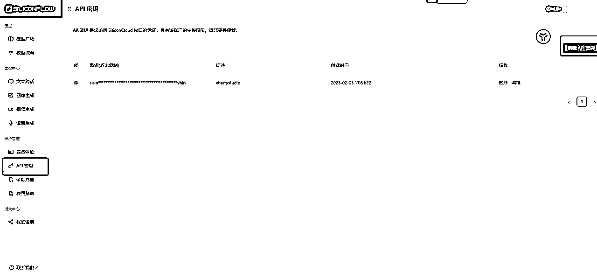

来源：https://tue99hylfd.feishu.cn/docx/TTaQdZxHHo9yybx3UN0chTtxnUe
本篇主要是为了解决小白用户使用deepseek网页版卡顿，使用app端又频繁出现服务器繁忙的备用解决方案。
正常对话和日常使用个人助理情况下是建议优先采用官方版本（官方的服务器以及模型版本与底层优化还是最新的），厂商接入的版本虽然是官方放出来的版本，但可能在时效性和优化上会有一些差异。
本部分主要针对小白，看实操请直接下滑到第三部分
简单理解，api的呈现样子是类似这样的一串代码，比如长这样【sk-f7e9aaaaaaa174c78a9b206858ac341ee】
它是钥匙，拿着一串钥匙是无法使用各种AI工具的，毕竟你无法直接跟一串文本产生任何的交互。
使用api，就是使用这个钥匙去开门。
所以我们需要一个工具载体（比如电脑端的软件，比如app）。
在可以接入api的软件上，当你把这串文本填写进去之后，相当于在操作的软件和AI模型的服务器上搭建了桥梁，钥匙能够定位是哪个AI哪台服务器。
所以，前置准备工作，我们需要一个能使用对话模式的空壳软件（里面有api接口，但不内置AI），以及一串api钥匙来确定使用的是哪个AI工具。
正常来说官方app和网页，以及原生API是最稳定的。
其次才是各种厂商提供的api接口，厂商使用的服务器/算力基础/与模型版本可能会存在差异。
开源的deepseek大模型好比是公开的菜谱，大家都可以使用。
作为用户目的是吃到好菜，官方可能用自己的厨房按照这个菜谱来给你做菜，但这个厨房人太多，比较拥挤，你如果要吃到好菜要排队等待（更何况用户里面还混了一些想要炸厨房的）
这个时候其他饭馆也拿到了开源的菜谱，同时店里有位置可以不用等，但是可能使用厨具/厨师有差异，会导致你吃到的菜有轻微的口感差异（比如开源的菜谱是历史版本，deepseek官方可能有优化和迭代和加料，但拿到原来开源菜谱的饭馆可能还停留在历史菜谱没有优化）
token意味着算力，可以类比为当你通过api连上了AI的本体服务器时，服务器要为你工作，需要耗费能量，这个能量就是算力，也就是token。
一般而言，token和石油一样，车要开，总得加油，所以当你使用api时一般是需要同步买算力的，买车不买油，车也开不动。
不同的厂商都能提供api接口，目前无论是deepseek官方，还是硅基智能，都可以实现注册就送算力（相当于买车送满油让你先开一下体验，当送的算力用完了，再用就要充值了）
实现对话的软件：
注册生成api的地方：

安装完成后打开会得到这个界面
点击左下角的设置按钮，找到第一个硅基流动，打开，然后填入第一步的api密钥，注意点击检查可以先用qwen大模型检查而不是deepseekr1，因为ds可能因为拥堵导致连接失败，这不是硅基流动的平台问题，而是模型出问题，我们这一步要确保，连上了硅基流动这个平台（平台有很多大模型，不止ds）。
连接好后，点击左边第一个对话按钮，选择默认助手，点击上方的模型名字，切换成R1（默认是V3）,R1是带思考的，V3是不带思考的（但便宜，可以用它来做不要思考的活比如起标题和翻译之类）
配置完成就可以开始对话测试了，注意深度思考的过程，思考中旁边的按钮是可以点开看详情的
到这一步，你就已经基本完成了api配置和大模型使用了，关于cherrystudio其实能做的事情有很多，本身也内置了很多提示词模版，大家可以尽情探索下。
上述还提供了很多api的备选项，原理都是一样的，在不同的平台获取api，然后在cherrystudio上直接使用，不同平台的送赠算力不一定相同，在官方不太够用的时候，可以尝试在其他平台搭建自己的api来实现。